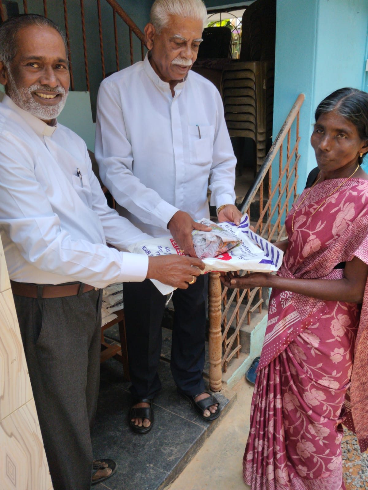

Two Decades of Compassionate Service
Messiyah Mission Trust was formally registered as a public charitable trust on January 24, 2006 (Registration No: 68/2006) at the Sub-Registrar's Office in Kanyakumari District, Tamil Nadu.
The trust was born out of an acute awareness of the challenges faced by rural senior citizens. As younger generations migrate or face extreme economic constraints, elderly parents and destitute widows often find themselves without food, medical attention, or physical protection.
From its headquarters in Thanivilai, the trust has steadfastly grown its outreach, maintaining rigorous accounting, full tax exemptions under Sections 12A and 80G, and statutory registrations with the Ministry of Corporate Affairs and NITI Aayog.

Relief kit and welfare distribution conducted for vulnerable village beneficiaries.
Vision, Mission & Guiding Values
Guiding every meal prepared, every clinic organized, and every life sheltered.
Our Vision
A society where every senior citizen, regardless of financial capacity, enjoys living in dignity, security, comfort, and good health without fear of abandonment.
Our Mission
To establish and sustain quality eldercare shelters, organize free preventive health camps, provide direct nutrition to the needy, and extend relief aid to the most vulnerable.
Core Principles
Empathy, complete financial transparency, non-discriminatory service for all communities, and uncompromised dignity in senior citizen care.
Leadership & Founder

Shri. T. Mariaraj
Shri. T. Mariaraj has dedicated his life to community upliftment, eldercare advocacy, and humanitarian relief in southern Tamil Nadu. Since founding Messiyah Mission Trust in 2006, he has personally overseen its programs, ensuring that donations translate directly into tangible support for elders and the disadvantaged.
His leadership ensures total adherence to legal compliances, timely audit filings, open financial stewardship, and warm personal engagement with every elder under the trust's wing.
Direct Correspondence: mairarjcmm@gmail.com | Mobile: +91 9488912650
Our Legal & Regulatory Commitments
Messiyah Mission Trust is committed to zero tolerance for financial obscurity. We submit annual audited financial returns, hold valid 12A tax exemptions, grant our donors 80G tax deductions, and maintain official registration on the NITI Aayog NGO Darpan portal.
Inspect All Official Numbers & Certificates →